0:00 / 0:00
Task 1
Franka Manipulation
Scattering
Place Wine On Rack
put the wine bottle on the rack.
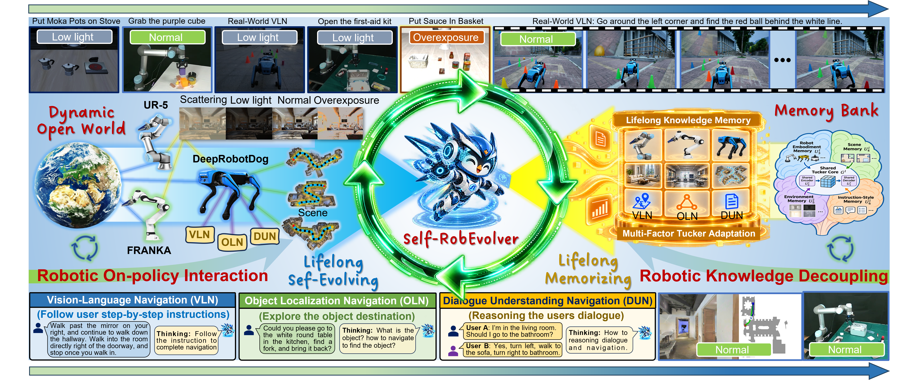
Recent vision-language-action models have significantly advanced embodied navigation and manipulation. However, existing robotic agents typically rely on human-provided demonstrations to acquire new skills, making it difficult to autonomously adapt to dynamic open-world environments while preserving previously learned knowledge. Moreover, robotic tasks are determined by multiple coupled factors, including robot embodiments, scenes, environmental conditions, and instruction styles, while existing task-level adaptation methods cannot explicitly disentangle such knowledge for flexible reuse. To address these limitations, we formulate a new problem, termed Lifelong Self-Evolving Robot Learning (LSERL), where a robotic agent continually improves from its own interaction experience while preserving and reusing previously acquired knowledge. To solve LSERL, we propose Self-RobEvolver, a unified framework that integrates Robotic On-Policy Self-Evolution (ROPSE) with multi-factor Tucker Adaptation (TuKA). ROPSE leverages realized future observations as privileged information to generate reliable self-distillation supervision. TuKA represents coupled robotic knowledge through high-order Tucker decomposition, disentangling different knowledge factors into structured memories and shared components. The ROPSE and TuKA combine to form the robotic co-evolving loop in the open world. Extensive experiments evaluate the effectiveness of Self-RobEvolver.
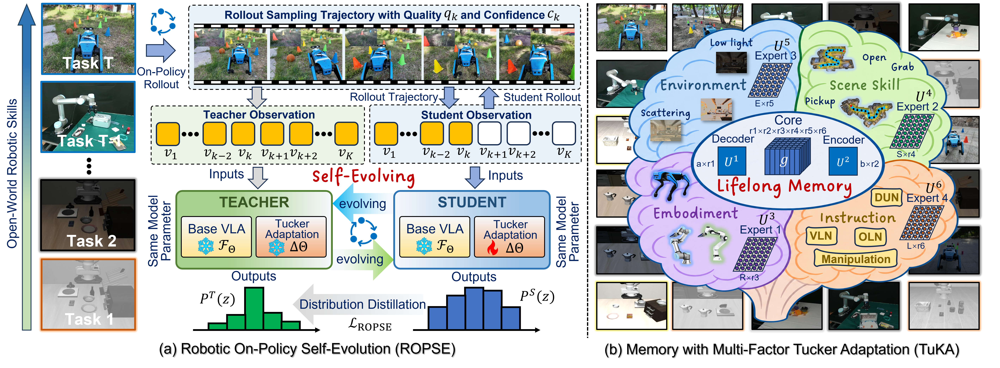
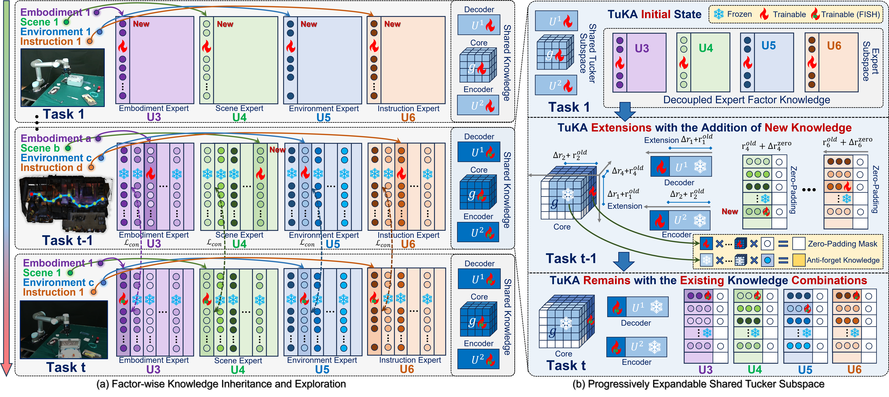
The Self-RobEvolver training pipeline and inference pipeline.
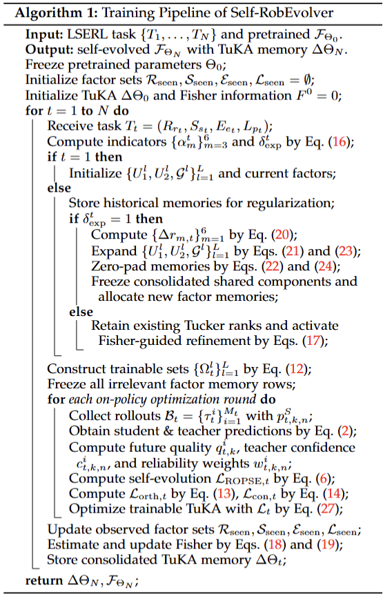
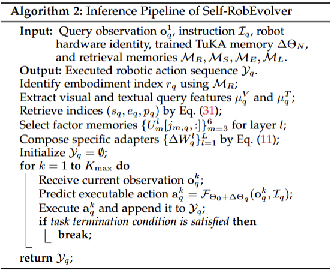
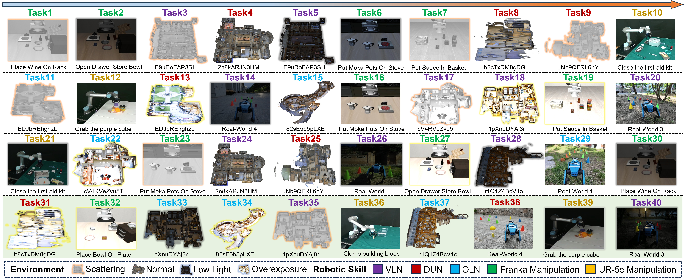
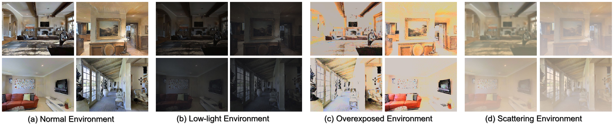
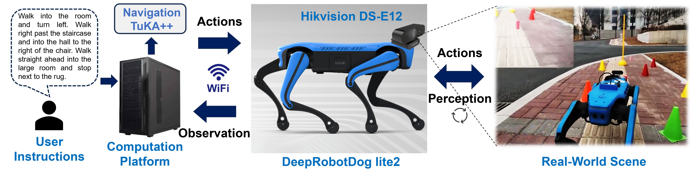
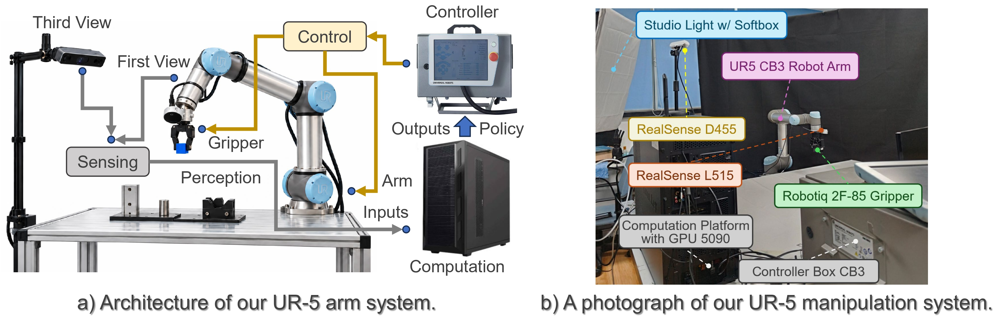
Task-wise rollouts across the 40-task LSERL benchmark, in order. Tasks 1–30 are learned sequentially (lifelong learning); Tasks 31–40 are held-out generalization tasks (inference only, not trained).
put the wine bottle on the rack.
open the top drawer and put the bowl inside.
Walk into the room on the left. Walk past the table and then walk past the bed. Walk out of the room and wait in the doorway.
Find the plant. Navigator: Do I go left or right on the stairs? Oracle: You're going to go up the right side of the stairs.
Turn to the left and walk on the rug, going past a few chairs and a end table. When you get to the hallway, you can turn right and then go to where there is a door on the left and on the right. Stop there. Wait.
put both moka pots on the stove.
pick up the tomato sauce and place it in the basket.
Find the book. Navigator: Should I go through the door in front of me? Oracle: Yes go through the door and keep going straight past spider man Navigator: Should I go through the door to the left of the window or continue? Oracle: Go straight then head down the stairs on your left Navigator: Should I go left or right at the bottom of the stairs? Oracle: Go right then go right again to the landing of the next set of stairs.
Find the box. Navigator: where do I go from this room? Oracle: go left past the dining room table and up the steps by the front door Navigator: where do i go from the bathroom? Oracle: go forward then right and go down the first set of steps.
Please close the first-aid kit.
Walk into the living room and fluff the blue pillow.
Please pick up the purple square and place it on top of the orange box.
Find the toiletpaper. Navigator: Hello, Do I move toward the exit sign? Oracle: go down along the building to the right of the exit sign.
Walk straight ahead, pass between the two orange cones, then through the cone-shaped barrels, and stop in front of the red ball.
Go to the balcony on level 1 that has a swimming pool and bring me the tan pot in the middle.
put both moka pots on the stove.
Exit living area, turn left head up stairs. Stop at the landing.
Turn towards the right and walk past the blue chairs. Take a left after passing the second blue chair and follow the walkway by the rails. Take the stairs on the right. Walk down the first flight of stairs and stop at the top of the second flight.
pick up the tomato sauce and place it in the basket.
Walk forward to the blue cone, then pass through the right side after reaching it, go between the cones, and stop in front of the blue cone.
Please close the first-aid kit.
Go to the first floor family room and clean off the top of the table near the entry from the stairs.
put both moka pots on the stove.
Go in the kitchen and out the other door. Walk toward the stairs, and go down them, and wait inside the back door with a dark shelf next to it.
Find the book. Navigator: Should I go left or continue up the stairs? Oracle: Actually, turn around, go down the steps behind you and go into the kitchen. Navigator: Should I go through the door? Oracle: No, that's not the kitchen. Turn around and go back into the hallway. Turn right and you will go into the kitchen. Keep going straight past the island.
Walk past the blue cone and the red ball, then look for the yellow ball hidden in the grass. Stop next to the yellow ball.
open the top drawer and put the bowl inside.
Leave the bathroom and take a right into the main room. Walk past the service buffet table and stairs, and take the first right. Stop in front of the bench below the bridal room sign.
Past the blue cone and the red ball, find the yellow ball hidden in the grass.
put the wine bottle on the rack.
Find the statue. Navigator: Should I move toward the white couches? Oracle: Not the ones close to you on your left. Go forward toward the white chair and into that room. Navigator: up the stairs? Oracle: Yes.
pick up the black bowl on the stove and place it on the plate.
Go to the hallway next to the office desks and bring me the picture nearest the desks.
Go to the outside hallway past the large wooden display cabinet and check if the pot nearest the door needs watering.
Pass the couches then turn right. Pass the stairs and continue straight until you get to a bedroom. Wait at the entrance.
Pick up the cylindrical wooden block and place it in the box
Go all the way to the end of the dining hall near the bar and bring one of the chairs closest to the bar area.
Find the yellow hemisphere. Navigator: Which way should we go now? Oracle: Go forward, pass the yellow and blue cones on the left, then go forward and stop at the yellow hemisphere.
Please pick up the purple square and place it on top of the orange box.
Walk forward and keep the red cone on your left as you pass it. Continue straight along the path of cones until you reach the end. Stop right in front of the yellow cone.
Self-RobEvolver consistently outperforms state-of-the-art baselines under the LSERL setting.
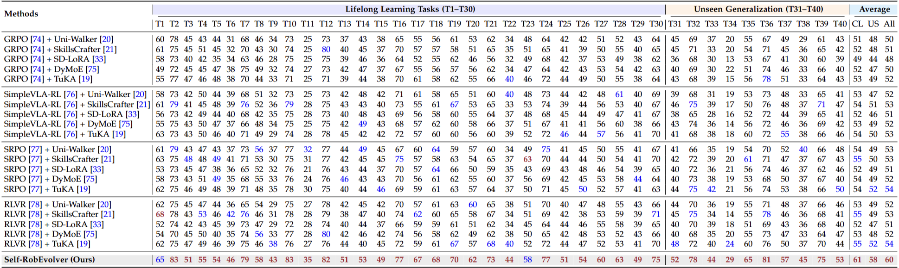
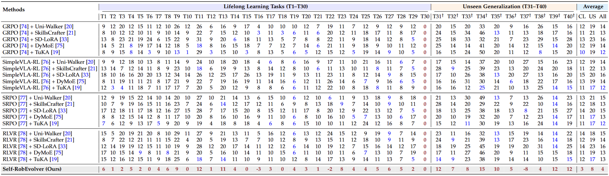
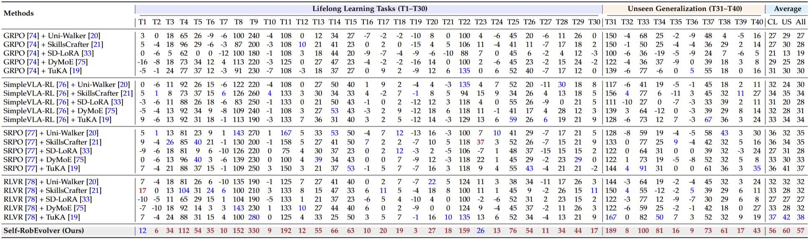

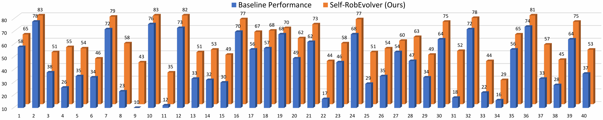
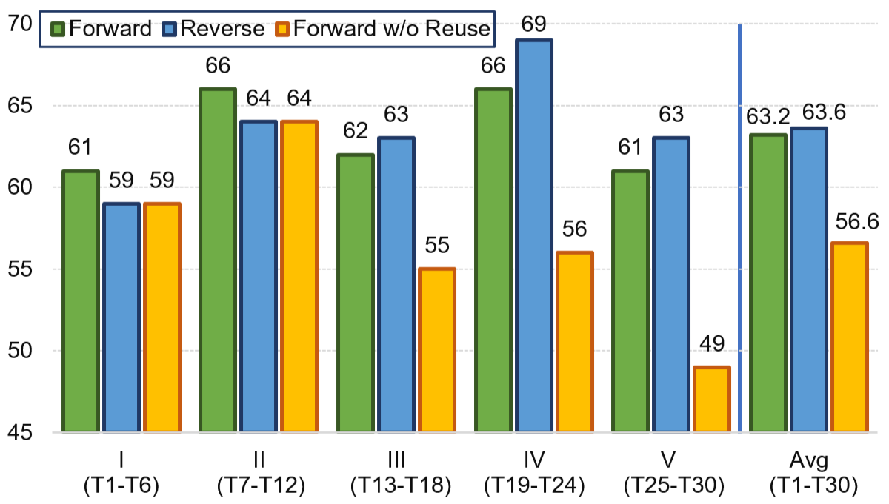
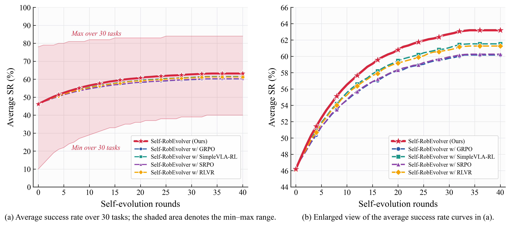